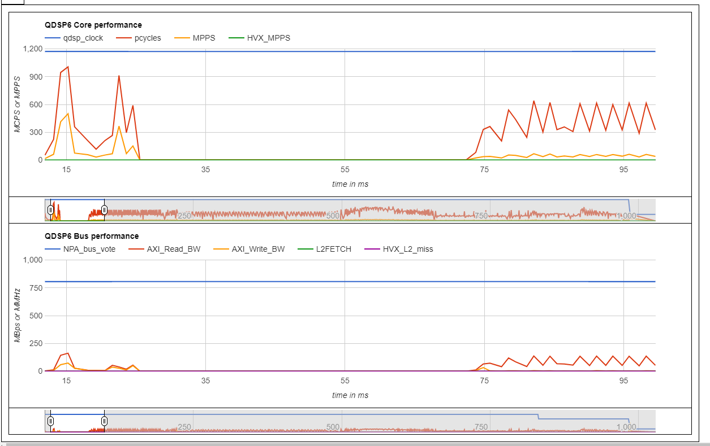

Profiling Example
Overview
This example illustrates the use of the various profiling tools and APIs available on the Hexagon SDK. This example also measures and reports the FastRPC performance with different buffer sizes and optimizations.
This example shows how to use the following:
- The FastRPC performance tests can be viewed in the shell. These tests print the overhead time for a CPU thread to offload a task to the DSP, wait for the DSP to execute that task, and wake up when the task is complete. The time measurements are meaningless on the simulator.
- The timer APIs demonstrate the APIs that can be used for accessing cycle and clock counters and use them to time a block of code. These APIs work on both the simulator and device. The time measurements are meaningless on the simulator.
- The Hexagon Profiler generates function-level profiling reports. This profiler can be used only on the simulator.
- The Hexagon Trace Analyzer parses trace files generated on device or on simulator and generates various analysis reports. This profiler works only on Linux.
- The sysMonApp displays various performance-related services on the cDSP, aDSP, and sDSP. This profiler can only be used on device.
Prerequisites
Before the profiling application is run the following conditions should be met:
- Make sure the Hexagon SDK is properly setup with the Setup Instructions.
- Some of the profiling tools discussed in this example are not supported on all devices. Please refer to the feature matrix for more details.
- The Hexagon Trace Analyzer requires Flamegraph and Catapult. These tools will be downloaded from the internet when the run_profilers.py script is run for the first time. You can download Flamegraph here and Catapult here.
Running profiling_walkthrough.py
The profiling_walkthrough.py script builds and runs the timer APIs and default FastRPC performance tests on a device.
Usage: profiling_walkthrough.py [-p] [-n ITERATIONS] [-i] [-m] [-u] [-q FASTRPC_QOS] [-U UNSIGNED_PD_FLAG]
In addition to the options supported by all walkthrough scripts, the profiling_walkthrough.py script supports the following options:
- Optional arguments:
| Option | Description | Default |
|---|---|---|
| -n ITERATIONS | Number of iterations to run. | -n 1000 |
| -d DOMAIN | Specifies the domain on which to run the example. MDSP and SDSP are not supported. Domain is CDSP by default. 0: ADSP 3: CDSP | -d 3 |
| -q FASTRPC_QOS | Set the FastRPC QoS latency in micro-seconds. This can improve performance at the expense of some increase in power consumption. QoS is turned ON by default. 0 will turn QoS OFF. Positive numbers set the QoS latency in micro-seconds. | -q 300 |
| -y SLEEP_LATENCY | Set DSP Sleep Latency. 0 is default and means DCVS V3 vote will not be made. Range of values is from 10 to 65535 microseconds. To remove a previous latency vote, simply vote for a large latency such as 65535 to indicate that there is no specific latency request. | -y 0 |
| -U UNSIGNED_PD_FLAG | Set the PD to run the example. 1 is default and means run the example on the Unsigned PD. | -U 1 |
| -p | Run power boost using the request type HAP_power_set_DCVS_v3 with HAP_DCVS_V2_PERFORMANCE_MODE. Further details are provided below. | OFF |
| -i | Disable ION memory for FastRPC performance tests. ION memory is used by default. This option is relevant only for FUNCTION_NAME default, noop, inbuf, routbuf. Otherwise this option is ignored. | ON |
| -m | Verify memory operations for FastRPC performance tests by passing a fixed pattern to the DSP function which copies it to the output. The caller then confirms the correct pattern is received. | OFF |
| -u | Use uncached buffers on the HLOS. | OFF |
For example, to build and run the timer APIs and default FastRPC performance tests on a sm8250 device:
python profiling_walkthrough.py -T sm8250
Building
Before modifying or understanding the code, we need to make sure we can build the example and generate the binary files from source. You can reproduce the steps of the walkthrough script by building and running the example manually as explained below.
- Build Android variant as follows:
make android BUILD=Debug - Build Hexagon variant as follows:
make hexagon BUILD=Debug DSP_ARCH=v65
For more information on the build flavors available and build syntax, please refer to the building reference instructions.
Running on device
- Use ADB as root and remount system read/write
adb root adb wait-for-device adb remount - Push Android components as follows:
adb wait-for-device shell mkdir -p /vendor/bin adb wait-for-device push android_Debug_aarch64/ship/profiling /vendor/bin adb wait-for-device shell chmod 777 /vendor/bin/profiling adb wait-for-device push android_Debug_aarch64/ship/libprofiling.so /vendor/lib64/ - Push Hexagon components as follows:
adb wait-for-device shell mkdir -p /vendor/lib/rfsa/dsp/sdk/ adb wait-for-device push hexagon_Debug_toolv84_v66/ship/libprofiling_skel.so /vendor/lib/rfsa/dsp/sdk/ - Generate a device-specific test signature based on the device serial number Follow the steps listed in the signing documentation.
NOTE: Signing the device needs to be done once as the same test signature will enable loading any module.
- Direct DSP messages to logcat:
adb wait-for-device shell "echo 0x1f > /vendor/lib/rfsa/dsp/sdk/profiling.farf" adb wait-for-device - Open another window to see aDSP diagnostic messages:
- Linux:
In a separate terminal:
adb logcat -s adsprpc -
Windows:
start cmd.exe /c adb logcat -s adsprpc sleep 2 -
Run Profiling Example:
adb wait-for-device shell export LD_LIBRARY_PATH=/vendor/lib64/:$LD_LIBRARY_PATH DSP_LIBRARY_PATH="/vendor/lib/rfsa/dsp/sdk\;/vendor/lib/rfsa/dsp/testsig;" /vendor/bin/profiling -
Optional Arguments supported by the binary when running the timer APIs and FastRPC performance:
Usage: /vendor/bin/profiling [-f FUNCTION_NAME] [-n ITERATIONS] [-s SIZE] [-q FASTRPC_QOS] [-U UNSIGNED_PD_FLAG] [-p] [-i] [-m] [-u]
| Option | Description |
|---|---|
| -f FUNCTION_NAME | Specify which function to run. The supported values are as follows:
|
| -d DOMAIN | Specifies the domain on which to run the example. MDSP and SDSP are not supported. Domain is CDSP by default. 0: ADSP 3: CDSP |
| -n ITERATIONS | Iterations to run FastRPC performance tests. 1000 is default. This option is relevant only for FUNCTION_NAME noop inbuf, routbuf. Otherwise this option is ignored. |
| -s SIZE | Size of data buffer for FastRPC performance tests. If 0 is given the noop function will run. |
| -q QOS_LATENCY | Set the FastRPC QoS latency in micro-seconds. Increasing the latency will save power at the expense of low performance. QoS is turned ON by default. 0 will turn QoS OFF. Positive numbers set the QoS latency in micro-seconds (300 is default). |
| -y SLEEP_LATENCY | Set DSP Sleep Latency. 0 is default and means DCVS V3 vote will not be made. Range of values is from 10 to 65535 microseconds. To remove a previous latency vote, simply vote for a large latency such as 65535 to indicate that there is no specific latency request. |
| -U UNSIGNED_PD_FLAG | Set the PD to run the example. 1 is default and means run the example on the Unsigned PD. |
| -p | Run power boost using the request type HAP_power_set_DCVS_v3 with HAP_DCVS_V2_PERFORMANCE_MODE. Further details are provided below |
| -i | Disable ION memory for FastRPC performance tests. ION memory is used by default. This option is ignored with the FUNCTION_NAME timers. Otherwise the option is relevant. |
| -m | Verify memory operations for FastRPC performance tests by passing a fixed pattern to the DSP function which copies the pattern to the output. The caller then confirms the correct pattern is received. This option is relevant only for FUNCTION_NAME inbuf, routbuf. Otherwise this option is ignored. |
| -u | Use Uncached buffers on HLOS for FastRPC performance tests. This option is relevant only for FUNCTION_NAME inbuf, routbuf. Otherwise this option is ignored. |
- Example commands with optional arguments to run the FastRPC tests on a specific buffer:
adb wait-for-device shell export LD_LIBRARY_PATH=/vendor/lib64/:$LD_LIBRARY_PATH DSP_LIBRARY_PATH="/vendor/lib/rfsa/dsp/sdk\;/vendor/lib/rfsa/dsp/testsig;" /vendor/bin/profiling -f inbuf -n 5000 -s 8388608 -p -q 700
The above example command will run the FastRPC performance test on an input buffer of size 8 MB with power boost and FastRPC QoS set to 700 micro-seconds.
adb wait-for-device shell export LD_LIBRARY_PATH=/vendor/lib64/:$LD_LIBRARY_PATH DSP_LIBRARY_PATH="/vendor/lib/rfsa/dsp/sdk\;/vendor/lib/rfsa/dsp/testsig;" /vendor/bin/profiling -f default
The above example command will run the FastRPC performance tests with on cached buffers, with ion disabled, with check memory off. The buffer types and sizes run will be the following:
| Buffer type | Buffer size |
|---|---|
| noop | 0K |
| inbuf | 32K |
| routbuf | 32K |
| inbuf | 64K |
| routbuf | 64K |
| inbuf | 128K |
| routbuf | 128K |
| inbuf | 1M |
| routbuf | 1M |
| inbuf | 4M |
| routbuf | 4M |
| inbuf | 8M |
| routbuf | 8M |
| inbuf | 16M |
| routbuf | 16M |
The results of the above command is as shown in Profiling summary report.
Running on simulator
-
When running the example on the Hexagon simulator, you need to use the
--timingoption for the cycle count to be accurate. The time measurements will not be meaningful. -
When running on the simulator, you need to pass both the arguments to the Hexagon simulator and to the test executable.
-
The arguments given to the executable are given in the previous section.
-
The simulator arguments are as follows:
| Simulator option | Description |
|---|---|
--mv* |
Simulate for a particular architecture version of Hexagon. E.g. -mv65. |
--timing |
Model processor micro-architecture with cache, multi-threading mode, and processor stalls as part of the simulation. This enables timing so that the simulation more accurately models the operation of the processor hardware. |
--simulated_returnval |
Cause the simulator to return a value to its caller indicating the final execution status of the target application. |
--usefs <path> |
Cause the simulator to search for required files in the directory with the specified path. |
--pmu_statsfile <filename> |
Generate a PMU statistics file with the specified name. See the SysMon Profiler for more information about PMU events. |
--help |
Prints available simulator options. |
- The Hexagon Architecture version for the -mv* flag can be selected based on the DSP architecture version from the following:
| DSP Architecture version | Simulator Flag |
|---|---|
| v65 | -mv65a_1024 |
| v66 | -mv66g_1024 |
| v68 | -mv68n_1024 |
As an example, here is how the profiling_q.so file might be run on the simulator:
cd $HEXAGON_SDK_ROOT/examples/profiling/
$DEFAULT_HEXAGON_TOOLS_ROOT/Tools/bin/hexagon-sim -mv65a_1024 --timing --simulated_returnval --usefs hexagon_Debug_toolv84_v65 --pmu_statsfile hexagon_Debug_toolv84_v65/pmu_stats.txt --cosim_file hexagon_Debug_toolv84_v65/q6ss.cfg --l2tcm_base 0xd800 --rtos hexagon_Debug_toolv84_v65/osam.cfg $HEXAGON_SDK_ROOT/rtos/qurt/computev65/sdksim_bin/runelf.pbn -- $HEXAGON_SDK_ROOT/libs/run_main_on_hexagon/ship/hexagon_toolv84_v65/run_main_on_hexagon_sim -- ./hexagon_Debug_toolv84_v65/profiling_q.so -f timers
FastRPC performance tests
The FastRPC overhead can be calculated for different buffer sizes. Below is the brief description of the tests that can be executed:
| Function | Description |
|---|---|
| noop | Makes a FastRPC invocation with no input and output buffers |
| inbuf | Makes a FastRPC invocation with one input buffer of varying buffer sizes ranging from 32K to 16M |
| routbuf | Makes a FastRPC invocation with one output buffer of varying buffer sizes ranging from 32K to 16M |
The input buffer and output buffer are defined in the IDL file inc/profiling.idl. To understand the in and rout parameters given in the idl file, please refer to the IDL documentation.
Contributing factors to FastRPC performance
Various factors impact the performance of FastRPC. Some of the relevant factors are described below. For a detailed explanation of these factors refer to the system performance documentation. The profiling application allows you to explore the impact of some of these factors.
-
ION buffers: ION buffers (available on Android targets) do not require extra copies of buffers when shared between the DSP and the CPU. Non-ION buffers will automatically be copied by FastRPC framework. The impact on performance can be observed in the FastRPC performance tests by using the -i flag to disable ION memory for the FastRPC performance tests.
-
Caches: The FastRPC driver takes care of maintaining cache coherency between CPU and DSP for shared buffers. When the -u flag is given for uncached buffers, RPCMEM_HEAP_UNCACHED is used. You can refer to the RPCMEM API to learn more. Caching should result in better performance, but this depends on the application.
-
FastRPC QoS: FastRPC offers a QoS API to enable users to request for a required FastRPC latency between CPU application making the remote call and beginning of DSP method execution. This latency requested is not guaranteed but the driver tries to meet available options on the target. Refer to remote_handle_control() and remote_handle64_control() defined at remote API. In the FastRPC performance tests, the user can request for latency by providing it with the -q flag. The default latency is set to 300 microseconds. A higher latency increases the FastRPC overhead observed.
-
Sleep latency: The low power sleep modes of the DSP can be entered by setting the DSP sleep latency. The DCVS V3 power voting is done to set the DSP sleep latency. This is supported only on limited devices. The values set for this should be in the range of 10 to 65535 microseconds.
-
Powerboost: If the power boost is set, the following DCVS V3 voting is implemented:
HAP_power_request_t request = {0}; request.type = HAP_power_set_DCVS_v3; request.dcvs_v3.set_dcvs_enable = TRUE; request.dcvs_v3.dcvs_enable = TRUE; request.dcvs_v3.dcvs_option = HAP_DCVS_V2_PERFORMANCE_MODE; request.dcvs_v3.set_bus_params = TRUE; request.dcvs_v3.bus_params.min_corner = HAP_DCVS_VCORNER_MAX; request.dcvs_v3.bus_params.max_corner = HAP_DCVS_VCORNER_MAX; request.dcvs_v3.bus_params.target_corner = HAP_DCVS_VCORNER_MAX; request.dcvs_v3.set_core_params = TRUE; request.dcvs_v3.core_params.min_corner = HAP_DCVS_VCORNER_MAX; request.dcvs_v3.core_params.max_corner = HAP_DCVS_VCORNER_MAX; request.dcvs_v3.core_params.target_corner = HAP_DCVS_VCORNER_MAX; request.dcvs_v3.set_sleep_disable = TRUE; request.dcvs_v3.sleep_disable = TRUE; HAP_power_set(NULL, &request);
The above settings can be found in the src/rpcperf_imp.c: profiling_powerboost() and profiling_sleep_latency(). To understand the DCVS_v2 and DCVS_v3 APIs, please refer to the HAP_power API documentation.
NOTE: Please note the following when running the FastRPC performance tests:
- There may be variability of timing results between runs
- The variability of timing results could be attributed due to a few reasons:
- Workload on the system
- Some entity in the system may be entering or exiting low power modes.
- The variability of timing results could be attributed due to a few reasons:
- The noop operation is run once before running the FastRPC performance tests on the inbuf and routbuf buffers. This is done so as to ignore the additional overhead of starting a FastRPC session on the DSP. This noop operation is not a part of the average overhead time displayed.
- The default Linux kernel boot image enables some config items that would impact performance. The Linux kernel boot image should be built with perf defconfig.
- The average overhead time should be computed over many iterations, to be more accurate.
Profiling summary report
The FastRPC performance tests described above returns the following summary report on the command line. This report shows the average FastRPC overhead in microseconds when making FastRPC calls per iteration, with variable input and output buffer sizes.
NOTE: The average FastRPC overhead per iteration will vary depending on the target and other factors
adb wait-for-device shell export LD_LIBRARY_PATH=/vendor/lib64/:$LD_LIBRARY_PATH DSP_LIBRARY_PATH="/vendor/lib/rfsa/dsp/sdk\;/vendor/lib/rfsa/dsp/testsig;" /vendor/bin/profiling -f default
[Test_Name Buffer_Size] Avg FastRPC overhead per iteration(micro-seconds)
[noop 0K] 311us
[inbuf 32K] 634us
[routbuf 32K] 627us
[inbuf 64K] 713us
[routbuf 64K] 784us
[inbuf 128K] 823us
[routbuf 128K] 790us
[inbuf 1M] 909us
[routbuf 1M] 887us
[inbuf 4M] 900us
[routbuf 4M] 891us
[inbuf 8M] 897us
[routbuf 8M] 907us
[inbuf 16M] 919us
[routbuf 16M] 896us
Running run_profilers.py
The run_profilers.py script can be used to run the following profiling tools on simulator and on device:
Unlike the profiling_walkthrough.py script, the run_profilers.py script does not automate the steps of building the binaries and running them on to the device. The user needs to ensure that the profiling_walkthrough.py script has been run or the binaries are present on the device.
Usage: run_profilers.py -T Target [-M] [-r PROFILER]
- Required Argument:
| Option | Description |
|---|---|
| -T TARGET | Specify the TARGET on which to run the script. Can be any supported device in the feature matrix |
- Optional Arguments:
| Option | Description |
|---|---|
| -M | Don't rebuild |
| -r PROFILER | Specify which profiler to run. The Supported values are as follows:
|
The Hexagon profiler needs to be passed the address at which the simulator loaded the shared object. This is accomplished by following the name of the shared object with a : separator and the load address. The $HEXAGON_SDK_ROOT/tools/debug/hexagon-trace-analyzer/generate_config.py script automates these steps by running first the simulator, capturing the shared object load address, and passing that address to the Hexagon profiler, which will generate the HTML file.
Similarly, the Hexagon Trace Analyzer needs to be passed the address at which the simulator loaded the shared object in config.py. The $HEXAGON_SDK_ROOT/tools/debug/hexagon-trace-analyzer/generate_config.py script does so automatically. The run_profilers.py script runs consecutively the Hexagon Trace Analyzer on simulator and the device.
The run_profilers.py script calls the $HEXAGON_SDK_ROOT/tools/debug/hexagon-trace-analyzer/generate_config.py script and thus runs without requiring any user intervention. You will only need to modify manually the shared object load address if you decide to run the Hexagon Trace Analyzer or the Hexagon profiler outside of these scripts.
-
Example to run the run_profilers.py script on the sm8250:
This will run the simulator tests as well as tests on the SM8250 target. If the example is run on Linux, the Hexagon Trace Analyzer will run as well.python run_profilers.py -T sm8250 -
Cleaning the folder to remove result files:
This will delete the result files generated by the run_profilers.py scriptpython run_profilers.py -T sm8250 -r clean
Timer APIs
Available Timer APIs:
| Function | Description | Usage location |
|---|---|---|
| HAP_perf_get_time_us | Gives the current time in microseconds | Usage demonstrated in profiling_memcpy_time_us |
| HAP_perf_get_pcycles | Gets the number of processor cycles | Usage demonstrated in function |
| HAP_perf_get_qtimer_count | Needs to be converted to micro seconds. Gets the qtimer from hardware. qtimer count is in terms of hw_ticks of a 19Mhz clock | Usage demonstrated in profiling_asm_iterations_time_us() |
Hexagon Profiler
Overview
The Hexagon Profiler is a simulator profiling tool that generates cycle analysis reports in json and html files. This profiler displays information about the execution history of a program, which may be used to identify any processor stalls in a program.
- To profile the example on the simulator with the Hexagon Profiler, do the following:
- Run the Hexagon example executable
profiling_q.soon the simulator using the following simulator flags:- --timing
- --packet_analyze hexagon_profiler.json
- --uarchtrace uarch.txt (Optional)
The above flags generate the json file hexagon_profiler.json.
-
Run the Hexagon Profiler to convert the json profiling file into a human-readable cycle analysis file in HTML format:
NOTE: The address$DEFAULT_HEXAGON_TOOLS_ROOT/Tools/bin/hexagon-profiler --packet_analyze --elf=$HEXAGON_SDK_ROOT/libs/run_main_on_hexagon/ship/hexagon_toolv84_v66/run_main_on_hexagon_sim,hexagon_Debug_toolv84_v66/profiling_q.so:0xd8042000 --json=hexagon_profiler.json -o hexagon_profiler.html0xd8042000is referred as vaddr in the console logs and its value is provided below the text including the shared object name, profiling_q.so. Please change this address in the above command for any other address and ensure this address is correct. Refer to the profiling documentation for further information. -
The files generated are as follows:
| File name | Description |
|---|---|
| hexagon_profiler.json | This json file is an intermediate file generated by the Hexagon Simulator. It contains the profiling information that needs to be post-processed by the Hexagon Profiler. |
| hexagon_profiler.html | This file contains profiling data generated by the Hexagon Profiler from the json file collected by the Hexagon Simulator. |
| uarch.txt | This is the micro-architecture trace file generated by the Hexagon Simulator. It reports major micro-architecture events like cache misses, packets executed, stall cycles, etc. |
NOTE: The Micro-architecture trace files(uarch.txt) can generate huge amounts of data. The option -- uarchtrace should be used with filtering to limit the collection of trace file data to relatively small time periods. For further information refer to the simulator documentation.
Understanding the results
The HTML report file presents an interactive document that allows you to select and display profiling information. The CORE Stalls tab shows a Summary report, Top packets, Top Functions, the Disassembly/Stall Name, etc. In the Top Packets section, you can observe the count and percentage of the profiling packets and functions. Many of the functions shown will be internal to the Simulator. These stats give a good picture of the packets and functions running on the simulator. The other tabs available are HVX Stalls, Events, PMU Events, Derived Stats, Instructions, and Help. These tabs give additional information about the example that has been profiled.
Hexagon Trace Analyzer
Overview
The Hexagon Trace Analyzer is a software analysis tool that processes the Hexagon Embedded Trace Macrocell (ETM) traces generated by the software running on the cDSP or on the Simulator. In the instructions below, we will demonstrate how to generate a trace on the device or on the simulator when running the profiling example, and how to process this trace with the Hexagon Trace Analyzer.
Prerequisites
- The Hexagon Trace Analyzer works only on Linux systems.
- The Flamegraph and Catapult tools need to be installed to $HEXAGON_SDK_ROOT/tools/debug/hexagon-trace-analyzer/ to view the results.
- The
run_profilers.pyscript installs these tools to the appropriate location when first run. - You will need an internet connection when running the script for the first time in order to download Flamegraph and Catapult. The links to download these two tools are given above
- The
- Flamegraph and Catapult work only on systems with Python 2.
- The Hexagon Trace Analyzer requires the module
xlsxwriterandsortedcontainers. Refer to$HEXAGON_SDK_ROOT/utils/scripts/python_requirements.txtfor more information on the requirements.
Profile on device
- The following command configures and enables tracing on the device, and launches sysMonApp to start collecting the trace:
python $HEXAGON_SDK_ROOT/tools/debug/hexagon-trace-analyzer/target_profile_setup.py -T Target -S trace_size -O
trace_size is the size of the trace that will be collected. It is expressed in bytes, in hexadecimal format. The trace file is updated in a circular buffer so that its contents will always reflect the most recent events. The default value is 0x4000000.
The -O option retrieves all the device binaries that the Hexagon Trace Analyzer needs to parse any collected trace.
Note: The -O option is only needed the first time you run the script on a newly flashed device. It should be omitted thereafter.
- Run the application
adb wait-for-device shell export LD_LIBRARY_PATH=/vendor/lib64/:$LD_LIBRARY_PATH DSP_LIBRARY_PATH="/vendor/lib/rfsa/dsp/sdk\;/vendor/lib/rfsa/dsp/testsig;" /vendor/bin/profiling -f timers - While your application is running, copy the ETM trace to a .bin file
adb wait-for-device shell "cat /dev/coresight-tmc-etr > /data/local/tmp/trace.bin" - Copy the trace.bin to your local machine
adb wait-for-device pull /data/local/tmp/trace.bin trace.bin - Run sysMonApp to display the load offsets of all DSP libraries that were recently loaded on device
adb wait-for-device shell /data/local/tmp/sysMonApp etmTrace --command dll --q6 cdsp - You should see output lines similar to:
data.ELF_NAME = libprofiling_skel.so data.LOAD_ADDRESS = 0xe040c000 data.ELF_IDENTIFIER = 0x00014000 data.LOAD_TIMESTAMP = 0x1ea6b0def4 data.UNLOAD_TIMESTAMP = 0x1ea726162d -
Edit the
config.pyfile by modifying the library names (i.e. ELF_NAME) and load addresses (i.e. LOAD_ADDRESS) values obtained from the etmTrace sysMonApp service that was invoked above. You can refer to the example config file$HEXAGON_SDK_ROOT/examples/profiling/config_example.py.NOTE:
-
Make sure the LLVM_TOOLS_PATH tools version in the config.py file matches the version of the tools present in
$HEXAGON_SDK_ROOT/tools/HEXAGON_Tools/ -
If the same library name occurs multiple times with different load addresses in the report from the sysMonApp etmTrace service, include all these instances in the
config.pyfile -
If the target is Lahaina, include
ver="V68"in the config.py file
-
-
Run the Hexagon Trace Analyzer to run generate the analysis reports:
$HEXAGON_SDK_ROOT/tools/debug/hexagon-trace-analyzer/hexagon-trace-analyzer ./config.py ./HexTA_result ./trace.bin
In the command line above
config.pyis the configuration file you editedHexTA_resultis the directory in which the results will be placedtrace.binis the trace file that you retrieved from the device
NOTE: If the target is Lahaina, you might see the following or similar logs on the console:
[47][ERROR] handleAsid ERROR zero!=1
[190][ERROR] handleProfile ERROR zero!=0
[190][ERROR] Has the correct version of Q6 been specified in config.py ?
[684][ERROR] Dropping Negative Gsync in timeline [thread,pcAddr,cycles,Gsync,recordOffset]:[4,4262405372,3,-38,84338]
Profile on simulator
- Run the application on the simulator with the following args:
- --timing
- --pctrace_nano
For example to run on the DSP v66:
$DEFAULT_HEXAGON_TOOLS_ROOT/Tools/bin/hexagon-sim --timing --pctrace_nano pctrace.txt -mv66g_1024 --simulated_returnval --usefs $HEXAGON_SDK_ROOT/examples/profiling/hexagon_Debug_toolv84_v66 --pmu_statsfile $HEXAGON_SDK_ROOT/examples/profiling/hexagon_Debug_toolv84_v66/pmu_stats.txt --cosim_file $HEXAGON_SDK_ROOT/examples/profiling/hexagon_Debug_toolv84_v66/q6ss.cfg --l2tcm_base 0xd800 --rtos $HEXAGON_SDK_ROOT/examples/profiling/hexagon_Debug_toolv84_v66/osam.cfg $HEXAGON_SDK_ROOT/rtos/qurt/computev66/sdksim_bin/runelf.pbn -- $HEXAGON_SDK_ROOT/libs/run_main_on_hexagon/ship/hexagon_toolv84_v66/run_main_on_hexagon_sim -- ./$HEXAGON_SDK_ROOT/examples/profiling/hexagon_Debug_toolv84_v66/profiling_q.so -f timers
pctrace.txt using the Hexagon Simulator when running the profiling_q.so on run_main_on_hexagon_sim executable.
For other DSPs the argument -mv66g_1024 can be changed appropriately. Refer to the Running on simulator section above and simulator documentation for further information.
NOTE: Make sure in the config_simulator.py script the LLVM_TOOLS_PATH tools version is the same as $HEXAGON_SDK_ROOT/tools/HEXAGON_Tools/8.4.12 in your currently installed Hexagon SDK.
- Make sure the extension for the trace file for the simulator is .txt. If .bin is used like the trace.bin file pulled from device, the Hexagon Trace Analyzer will not be able to process the traces from simulator.
- Finally run the Hexagon Trace Analyzer with the
config_simulator.pyfile already present in the example folder :$HEXAGON_SDK_ROOT/tools/debug/hexagon-trace-analyzer/hexagon-trace-analyzer ./config_simulator.py ./result_hexta_simulator ./pctrace.txt
In the command line above
config_simulator.pyis the configuration fileresult_hexta_simulatoris the directory in which the results from simulator will be placedpctrace.txtis the trace file generated when running the application on the simulator
Understanding the results
- The perFunctionStats.xlsx file in the generated result folder has a column "function". The column has a drop-down menu allowing you to select the function for which you want to display statistics.
- The cycleCount column in this file shows the total number of cycles a function has consumed. The same information can also be viewed in flamegraph/globalCycles_icicle.
To view the breakdown of cycles per call to this function you can look for the function in flamegraph/globalCycles
- Run command using the
run_profilers.pyscript:
The Hexagon Trace Analyzer works only on Linux systems.
-
For device:
python run_profilers.py -T sm8250 -r hexagon_trace_analyzer -
For simulator:
python run_profilers.py -T simulator -r hexagon_trace_analyzer
The files generated:
| File name | Description |
|---|---|
| trace.bin | This is the binary file pulled from the device |
| flamegraph files | Graphical demonstration of the different functions |
| catapult files | Graphical demonstration of the different functions |
| xlsx files | These files have the time of execution in numerical format |
The perFunctionStats.xlsx file for the device has a detailed analysis of the different functions running on the device. Many of these functions are marked as hidden_function. These hidden_functions are internal to the device but the user can observe the effects of these functions. To find a particular function to analze, a user can use the drop-down filter for columns to filter the functions. A filtered view of these functions is shown below.
The filtered view of the functions shows the relevant functions along with the different cycle count, %load, cycles per packet(cpp), unused bytes, etc. You can make an analysis of the functions that are taking too many cycles using this information.
Flamegraph gives a graphical representation of the different profiled functions. The global cycles is one such graphical representation that shows the function call tree with corresponding cycles. The width of each bar is proportional to the number of cycles spent in that task/function and its children. A function can be searched in the top right corner search box. Once found, the function is marked in a shade of purple to highlight it. The function details are showing below the Flamegraph. In the above image profiling_memcpy_time_pcycles is shown as selected. Majority of the functions shown are marked hidden as they are internal to the device.
Globalcycles icicles is similar to the global cycles but with an inverted layout. The Global Packets is graphical representation of the packets run for each function. In this representation as well, you can look for a particular function. Once the function is found, it is marked with a shade of purple and its statistics are displayed.
Catapult provides another graphical representation of the profiled functions. Catapult provides an interface where you can pan and zoom, in and out of the graphical representation using the zooming options provided at the right side of the interface. To the left of the interface, HWT represents the HW threads. To the extreme right of the interface there are additional tabs that can also be used for analysis. You can search for your function in the top right corner of the page. The statistics of that function appears in the bottom half of the page.
On the simulator, the results are quite similar to the results obtained from the device:

sysMonApp
Overview
The sysMonApp is an app that configures and displays multiple performance-related services on the cDSP, aDSP, and sDSP. The sysMonApp can be run as a standalone profiling tool or as an Android Application. In the instructions below we will demonstrate how to use the sysMonApp profiler tools to analyze the profiling example on the device.
Profile from the Command Line
- Copy the sysMonApp to the device
adb push $HEXAGON_SDK_ROOT/tools/utils/sysmon/sysMonApp /data/local/tmp/ adb shell chmod 777 /data/local/tmp/sysMonApp - Make sure adsprpcd is running:
adb shell ps | grep adsprpcd - Run the sysMonApp profiler service in user mode on cDSP as follows:
adb shell /data/local/tmp/sysMonApp profiler --debugLevel 1 --q6 cdsp - Run the profiling example on device:
adb wait-for-device shell export LD_LIBRARY_PATH=/vendor/lib64/:$LD_LIBRARY_PATH DSP_LIBRARY_PATH="/vendor/lib/rfsa/dsp/sdk\;/vendor/lib/rfsa/dsp/testsig;" /vendor/bin/profiling -f inbuf -s 65536 -m') -
The previous command should have generated a file
/sdcard/sysmon_cdsp.bin. This file should be pulled to your local computer as follows:NOTE: On some devices, the trace file may be generated in the /data folder instead.adb pull /sdcard/sysmon_cdsp.bin -
The
sysmon_cdsp.binfile can be parsed with the sysMonApp parser service as shown below. -
Run the sysMonApp Parser
NOTE: The Hexagon SDK contains Windows and Linux versions of the parser. Both versions have the same interface. Below we illustrate how to use the Linux parser. For Windows simply replace parser_linux_v2 with parser_win_v2 in the commands below.
- The following example command shows how to generate HTML and CSV files in Linux to output directory
sysmon_parsed_output. The sysMonApp parser usage can be found here. The Windows tool expects the same arguments:$HEXAGON_SDK_ROOT/tools/utils/sysmon/parser_linux_v2/HTML_Parser/sysmon_parser ./sysmon_cdsp.bin --outdir sysmon_parsed_output
Profile using Android Application
- Install the sysMon DSP profiler application on the device using adb install:
adb install -g $HEXAGON_SDK_ROOT/tools/utils/sysmon/sysMon_DSP_Profiler_V2.apk - The sysMon DSP Profiler UI for the sysMonApp Android Application provides user flexibility to choose from different modes of profiling. You can select the Mode based on your requirements. The available modes are:
| Mode | Description |
|---|---|
| DSP DCVS | User can adjust DSP core and bus clocks dynamically for profiling duration. |
| Default Mode | A fixed set of performance metrics will be monitored. Sampling period is either 1 or 50 milli-seconds. |
| User Mode | If Default Mode is unchecked, User Mode is enabled. The user can select the desired PMU events to be captured. |
| 8-PMU Mode | If both DSP DCVS and Default modes are unchecked, 8-PMU mode is enabled. This allows user to choose whether to configure 4 PMU events or 8 PMU Events. |
- The Configuration Settings button is enabled in user mode and you can select the PMU events to be captured.
- Further details about the different modes and options can be found in sysMonApp Profiler.
Understanding the results
- The files generated by sysMon Profiler application are the following:
| File name | Description |
|---|---|
| sysmon_cdsp.bin | This is the cDSP binary file pulled from the device. |
| sysmon_report directory | This directory is generated after running the sysMonApp HTML Parser. It contains HTML and csv files generated by the HTML Parser. This directory is named based on the date the report was generated. |
- The sysMonApp HTML file gives an overall summary of the profiling done using the sysMonApp. Here is an example of the HTML generated from the sysMonApp.

- To understand the output of these files generated please refer to the sysMonApp profiler documentation